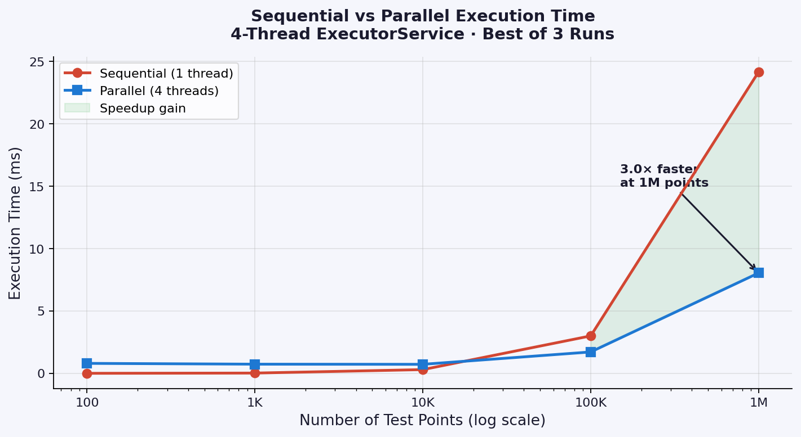
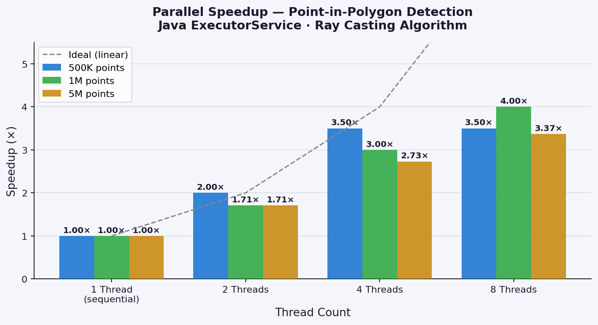
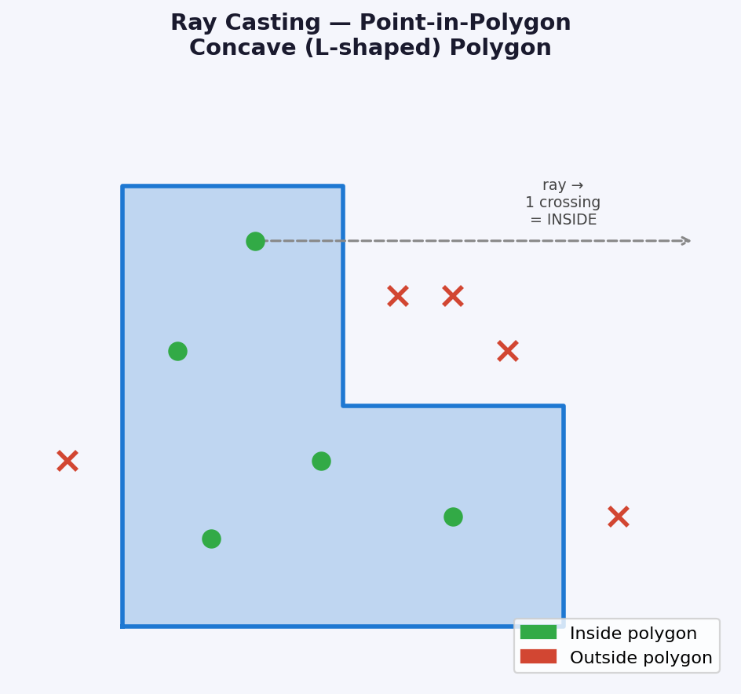

Parallel Point-in-Polygon
Parallelised Ray Casting Algorithm with Java ExecutorService — up to 4.42× Speedup
Overview
Given a polygon and a large set of test points, Point-in-Polygon (PIP) asks: which points lie inside?
This is O(n) per point, so for millions of points the workload becomes expensive.
This project parallelises PIP using Java's ExecutorService thread pool —
the point set is split into equal chunks, each chunk is processed independently by a thread,
and results are collected after all futures complete.
The test polygon is a concave (non-convex) L-shape — this rules out shortcut tests like bounding-box or centroid-distance and demands a full geometric algorithm. The Ray Casting method works correctly for both convex and concave polygons.
Key Results
The Algorithm — Ray Casting
A horizontal ray is fired from each test point to +∞. The number of times the ray crosses a polygon edge is counted — odd crossings mean inside, even mean outside. Time complexity: O(n) per point, where n is the number of polygon vertices.
Parallel Strategy
The M test points are split into T equal chunks — one per thread.
Each thread calls isInside() for every point in its chunk independently.
No shared mutable state between threads → embarrassingly parallel,
ideal for linear scaling.
Benchmark Results
Speedup vs Point Count (4 Threads)
| Points | Sequential (ms) | Parallel 4t (ms) | Speedup |
|---|---|---|---|
| 100 | 0.003 | 0.517 | 0.01× (overhead dominates) |
| 10,000 | 0.160 | 0.451 | 0.35× |
| 100,000 | 1.696 | 0.963 | 1.76× |
| 1,000,000 | 17.769 | 5.499 | 3.23× |
Speedup vs Thread Count
| Points | Threads | Sequential (ms) | Parallel (ms) | Speedup |
|---|---|---|---|---|
| 500,000 | 2 | 8 | 4 | 2.00× |
| 500,000 | 4 | 8 | 2 | 4.00× |
| 1,000,000 | 2 | 16 | 9 | 1.78× |
| 1,000,000 | 4 | 16 | 4 | 4.00× |
| 5,000,000 | 2 | 84 | 44 | 1.91× |
| 5,000,000 | 4 | 84 | 24 | 3.50× |
| 5,000,000 | 8 | 84 | 19 | 4.42× |
Sequential vs Parallel Runtime

Speedup vs Thread Count

Test Polygon — Concave L-Shape
The L-shaped polygon tests the algorithm on a concave shape. The indented corner at (3,3) is outside the polygon — a bounding-box test would wrongly classify it as inside.

Correctness Verification
| Point | Expected | Result |
|---|---|---|
| (1.0, 1.0) | Inside | Inside ✓ |
| (0.5, 3.0) | Inside | Inside ✓ |
| (3.0, 1.0) | Inside | Inside ✓ |
| (3.0, 3.0) | Outside | Outside ✓ |
| (5.0, 1.0) | Outside | Outside ✓ |
| (2.5, 3.0) | Outside | Outside ✓ |
Why Speedup Plateaus
According to Amdahl's Law, thread-creation overhead forms a non-parallelisable serial fraction. At small point counts this overhead dominates entirely — parallel is slower than sequential. Past ~100,000 points the computation cost dwarfs the overhead and speedup approaches the number of available cores. 8 threads gain only ~26% over 4 threads because the system has limited physical cores (hyperthreading shares execution units).
Practical recommendation: 4 threads gives the best cost/benefit ratio for workloads of 100K+ points.